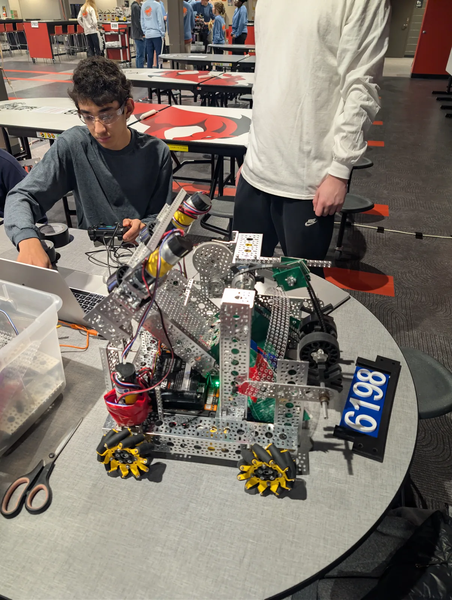
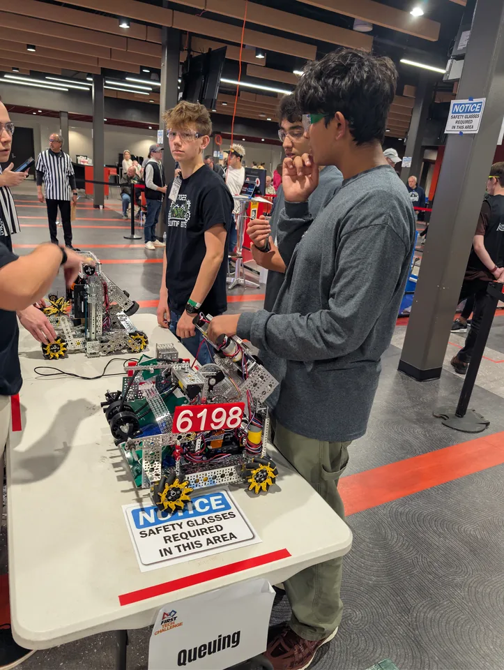
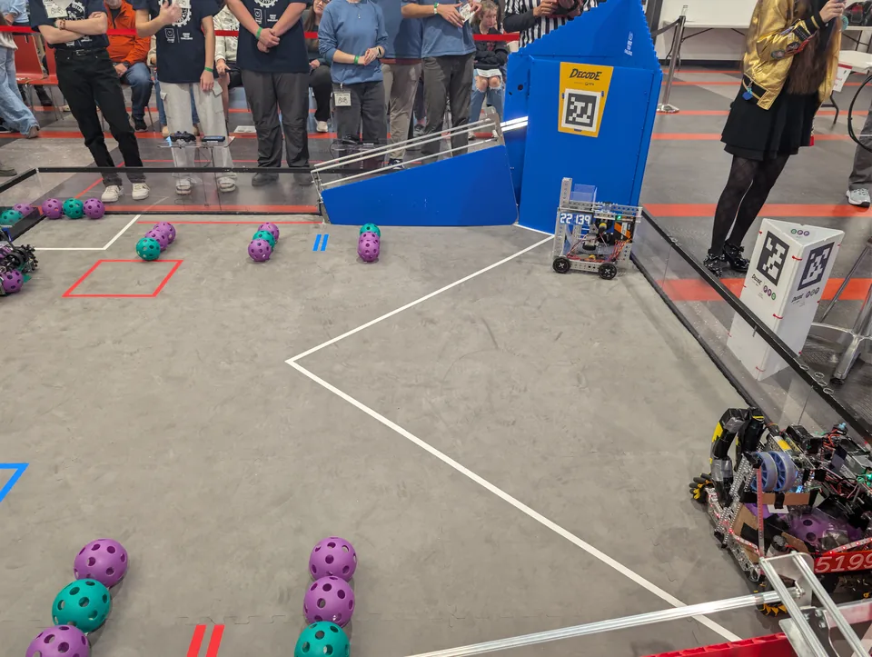
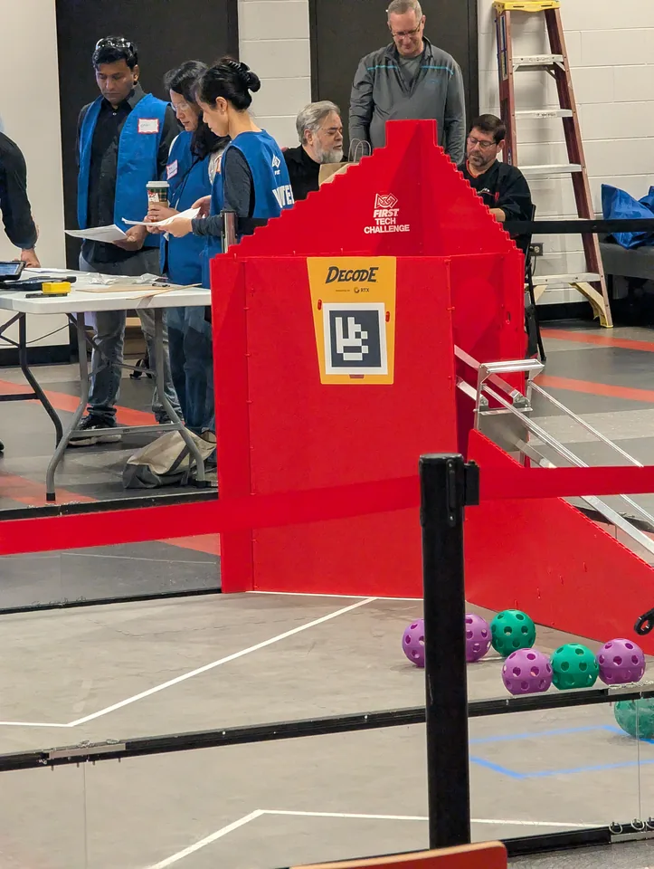
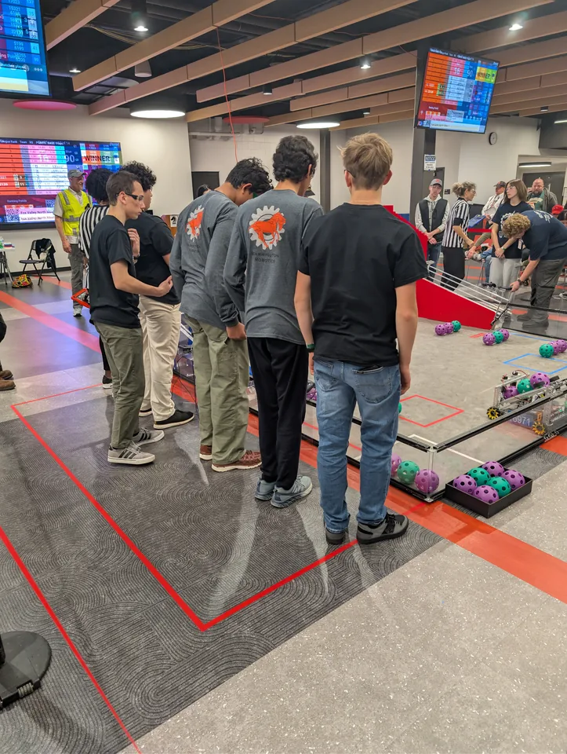

From a sketch to a machine that survives a match.
Good robotics is less about a single clever mechanism and more about the loop: define the problem, prototype, test, measure, revise, and document.
How we approach the robot
FTC gives a team a deadline and a rule set. The engineering work is deciding what matters inside those constraints. Every subsystem has to fit the robot, the driver, the strategy, the budget, and the reality of competition.
01 · Design & CAD
Translate game requirements into mechanisms and assemblies that can actually be manufactured, serviced, and iterated.
02 · Build & fabrication
Turn designs into physical parts, assemblies, wiring, and mechanisms. Build quality matters because a theoretically strong robot is not useful if it cannot survive repeated matches.
03 · Software
Programming connects the driver's intent to motors, sensors, autonomous routines, and repeatable behavior. The goal is predictable performance rather than clever code for its own sake.
04 · Testing
Use matches and controlled tests as evidence. When something fails, the useful question is not only “what broke?” but “what should we change so it is less likely to break again?”
The work is visible.
Competition photos are not decoration; they are snapshots of the engineering process in context.




